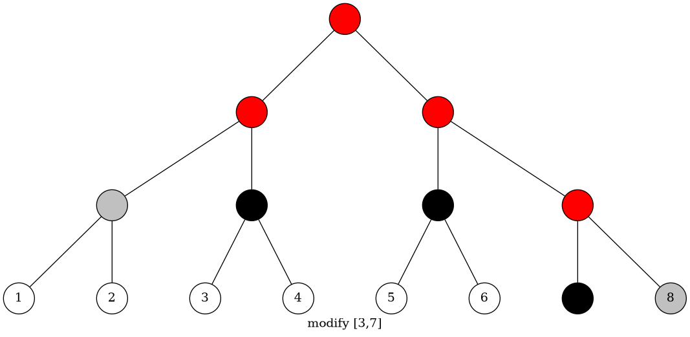

做题总结
构造题
Atcoder5093
考虑增量。对于一个大小为 k 的图，我们加一个点进去。那么我们求出原本这个图的哈密尔顿回路的最大值 M，则我们新连的边只要大于 M，就不会和以前的路径冲突。现在我们考虑新连的路径互不冲突。考虑构造一个序列这个序列满足所有的和是互不相同的。因此我们第 k+1 个点连向第 i 个点的边权设为。这样就行了。
AtCoder 5167
考虑分治，每次把当前点集分成两个点集，连二分图，然后左右递归做。
由于左右两边点集不相交，因此两边递归下去连出来的二分图也是不相交的。
level 就是当前递归的层数。
标算是一个鬼畜的 lowbit 构造法，不太可扩展。
字符串
CF 427D
一个串建 SAM，另一个串在上面跑就行了。跑的时候要记一下另一个串的当前长度和状态数。
CF 316G3
把所有串（包括第一个串）连起来，加一个分隔符（{）建一个 SAM，统计状态数的时候分串统计。然后统计每个状态的贡献就行。
CF 204E
建一个广义 SAM，然后用 Map 统计一下各个串是否经过这个状态以及经过次数，统计的时候和状态数乘一乘就行。
ZJOI2015 诸神眷顾的幻想乡
最多只有 20 个叶结点，所以以每个叶结点为根分别建 Trie，然后合并成一个 Trie，然后在 Trie 上 BFS，每次从父节点的 Last 扩展为当前的结点建 SAM。然后统计本质不同状态数就行。
数据结构
ZR 1037C
长度相同的一起处理，本质不同的长度是根号级别的。复杂度。
CF 438D
线段树，均摊
UOJ 228
对于区间的情况开根，有两种情况：
- 开根后差仍为 1，相当于一个区间减；
- 开根后变成相同的数，相当于区间覆盖；
对于这两个标记，在区间覆盖的时候清空区间加的标记；在下传的时候先覆盖再加。均摊。
LOJ 121
每条边存在的时间是一个区间，那么我们按时间建线段树，然后每个区间被分成 log 个标记。于是我们在线段树上 DFS，使用可撤消并查集维护连通性即可。
BZOJ1568 JSOI2008
李超线段树，标记永久化一下，即查询的时候查询路径上的标记。
复杂度。
BZOJ2038
典型的莫队。注意 Luogu 的数据可能区间长度为 1。在提交的时候要删调试的文件（吃一发 WA）
CF1221F
显然可以把所有点都放到上方，这样转化之后有。
考虑将所有点按照纵坐标从小到大排序。则我们做一个横着向上的扫描线，每次加入一些点后，我们相当于要合理画出一条竖线，使得横线，竖线，围成的三角形内的点权和减掉三角形直角边边长最大。这本质就是线段树上最大右边缘区间和，可以直接维护。在扫描线向上延伸的时候要在对应结点减去前后位置的差，这样就可以顺便减掉边长（可以理解为边长差分）。
离散化一下，显然正确性不会变。
ZJOI2019 线段树
题面较长。
容易想到，转化为概率问题。每次我们的操作有的可能被执行。不妨设表示线段树的结点的 tag 值为 1 的概率。那么我们执行一次操作，结点的会怎么变化？
我们将一次操作中的结点分类：

黑点代表被完全覆盖，红点表示被部分覆盖，灰点表示它有可能接受父节点的 pushdown。
若进行一次操作：
- 黑点的是；
- 红点的是；
- 灰点的，取决于其祖先的点上是否有 tag。
因此光定义并不能很好地处理灰点的情况。我们还定义表示，及其祖先中出现 tag 值为 1 的概率。
对于，若进行一次操作：
- 黑点的为（它自己有 tag）；黑点的儿子（子树）的也是；
- 红点的为；
- 灰点的为，而则不变。
因此我们得到了转移的式子：
- 黑点：，；
- 红点：，；
- 灰点：。
使用线段树维护即可。
时间复杂度。
子异和
设，设。
给出一棵个点带点权树。要求支持次操作：
- 路径的权值都异或；
- 求路径的权值集合的值。
。
位运算 按位考虑 线段树 树链剖分
首先考虑怎么算。先按位考虑。那么问题转化为 01 集合的值。设该集合有个，个。那么可以得到。于是我们发现这只和集合大小有关。
考虑树上的问题，那么我们的问题就转化为 01 点权树的操作。然而树链剖分维护的复杂度是的，再加上按位考虑就是的。
不妨把所有位合在一起考虑。因为我们只需要查询当前路径的第位上是否有 1。那么也就是查询路路径 or。要支持路径 or，路径 xor，我们可以维护分别表示当前区间的数哪些位都是 1，哪些位都是 0，哪些位是 01 都出现了的。那么在区间异或的时候对做一些位运算即可。在向上合并信息的时候可以用更新。
总时间复杂度。
图论
AtCoder 5168
每行，每列建点，那么在 (x,y) 放一个权值为 w 的卡相当于连一条 (x,y,w) 的边。我们选的方案则一定是一个基环树森林。基环树点数等于边数，则每一条边可以不重不漏地选择一个端点，相当于在这一行（列）被选。于是像找 MST 一样贪心找最大权基环树森林就行。
BZOJ1001 狼抓兔子
最小割的题，Get 到了一个给无向边建流的 Trick。似乎更好的做法是平面图最小割转对偶图最短路，但我懒所以直接 Dinic 过了。
ZR 308
动态加点求桥。
可以离线并查集维护。首先读下来所有边并建出一个桥的生成树（即加入并查集的边构成的树）。然后再扫一遍边集，如果遇到桥就加 1，否则就删除两点路径上的边的桥标记。使用并查集树上的合并技巧即可。
时间复杂度。
CF1243 0-1MST
求的是 0 连通块的个数。每次加入一个点，看这个点可以和当前的哪些连通块合并，于是遍历所有与这个点有关的边，统计到每个连通块的边数，就可以判断是否存在 0 的边。
时间复杂度。是并查集。
计数
AtCoder 5169
一个计数题。首先我们要知道，给 n 个人分不超过 r 个球的方案数是的。相当于给个人分 r 个球，第个人是一个工具人。
题意要求从大到小排序后，则我们转化为求的方案数，然后用总方案数减。
我们枚举，则转化为求出，的方案数。用差分的方法转化为求的方案数。然后对容斥一下，这样相当于球的上限是，i 是枚举的的个数。
CF1221G
定义表示边权属于集合的方案数。这样容斥一下：
接下来挨个分析：
- 显然，。
- 相当于每个连通块染一种颜色，则设连通块数量为，那么。
- 相当于每个点权值为 0，但孤立点则权值任意。设孤立点个数为，则。
- 。
- 即二分图染色。如果存在非二分图连通块则；否则。
- 与边数有关，如果边数为 0 则，否则。
- 。
最后考虑，它相当于是图的独立集个数。则设表示 G 的导出子图的独立集数。那么显然可以枚举当前点是否属于独立集来计数。而合法的状态数不多。采用记忆化搜索，事实上最多枚举次，然后剩下的就根据记忆化的结果直接返回，复杂度是的。
总复杂度。
LG4980
Polya 模板题
BZOJ1002 轮状病毒
正解是基尔霍夫矩阵树定理，但递推式很简单，。
高精度即可。
BZOJ3202 SDOI2013 项链
总结一下这题的细节与技巧：
- 不能费马小定理求逆元，因为模数有时不是质数。
- LL 乘快速幂的时候要先取模，不然可能溢出。
- 注意掌握莫比乌斯反演与容斥的小技巧。
BZOJ1547 周末晚会
通过 Burnside 定理转化为求 01 链的相邻 1 个数不超过 k 的方案数，并且要求首尾的 1 连起来个数不超过 k。
如果那么可以随便染。如果则环数不超过，只要不全染 1 就没事。否则考虑 DP。
表示 i 个数末位 k 个为 1 的方案数（不考虑首位和的情况）。最后减掉不合法的方案即可。
ZR996 空
具体就看题解了。记两个 Trick。
首先是字符串子序列匹配方案数和具体的字符是没有关系的，因此枚举最后一段的长度可以转化为组合计数问题。
然后就是组合数化简的技巧：对于，可以写成递推的形式：
于是移项得到
Exercise
定义一个置换的幂周期为最小使得。
求长度为的所有置换的幂周期乘积。
。
min-max 容斥 DP 组合数学
容易发现，幂周期是环长的 LCM。由于求的是乘积，不妨对每个质因子考虑指数的和。因此我们要求的就是所有幂周期中的指数的和。
设表示在中的指数。
假设环长是。那么的指数就是。
不妨设
则原式化为。
考虑如何计算。容易发现，它相当于强制要求子集里的环长都是的倍数。考虑 DP。设，设表示个数的贡献和。那么枚举第一个数所在环的长度，得到
前面的负号是容斥系数。那么就相当于个数中选择个数（剩下的个数随便排），然后统计这个数的贡献：
那么计算的复杂度就是。则总复杂度就是，能过。
注意，枚举的时候只枚举，不要枚举非质因子幂的合数。
博弈
CF1221E
一道不平等博弈的题。由于 a>b，我们考虑 Bob 先手的情况，对于一段连续的.的长度有 4 种情况：
- ；
- ；
- ；
- 。
如果存在第 2 种情况，那么 Bob 必胜。因为 Alice 能走的 Bob 一定能走，而 Bob 能走的 Alice 不一定能走。
如果存在第 4 种局面，那么 Bob 可以走一发构造出 2，这样他也赢了。
第一种局面没用。第三种局面对于 Alice 和 Bob 都是一次性的。
因此再来考虑 Alice 先手，如果存在 2 那么他就输了；如果存在 2 个及以上的 4 那他也输了。否则可以枚举他走了一步之后的局面，根据局面 3 个数的奇偶性判胜负。
期望
ABC144 F
注意到这是一个拓扑序为 1 到 n 的 DAG，因此我们可以按拓扑序逆序计算每个点到的期望，记为。
现在要求我们删掉一条边，则一个直观的想法是我们计算到达点的概率：
假设我们删掉了这条边，则这个点的期望就变成了
于是删掉这条边，期望就变成了。这样就枚举删边更新答案，做完了。
离线
HNOI2016 网格
如果所有路径都包括这个点，那么他们的路径交也包括这个点。因此权值线段树上维护路径交，查询的时候在线段树上二分。要先离散化一下变成不同的权值方便删除。
路径交：边的路径交可以直接取两两 LCA 中最深的两个。点的路径交需要先判是否相交再这么做。
贪心
CF893 D
一个显然的贪心是，只在的时候充钱。这样不会变劣。
先检查一下最低限度的充钱会不会爆。如果不会爆就在每次且钱为负数的时候直接充满到。如果在某个时刻钱数大于，就说明之前有一次充多了，直接把钱数变成即可。因为我们检查了最低限度充钱是有解的，因此正确性保证。
复杂度。
数论 / 数学
ZR1090 A+B Problem
算法一：注意到
于是直接计算分子，对取模，然后除掉即可。然而 int128 的精度过不去；
算法二：注意到。于是类似快速幂地做就行。复杂度。
CF1255 E2
设。那么原操作可以转化为，将加一或减一。这样就是只针对一个数的操作了。
由于是单增的，因此对于一个固定的，要把所有变成的倍数，我们贪心地把变成离它最近的的倍数即可。容易证明这是合法的。代价就是。
至于，我们只需要选择的质因子作为即可。容易证明的约数一定不比劣。这样复杂度为。
修订记录
- 2021年2月11日 第3次修订
- 2021年2月11日 第2次修订
- 2020年4月24日 创建文章